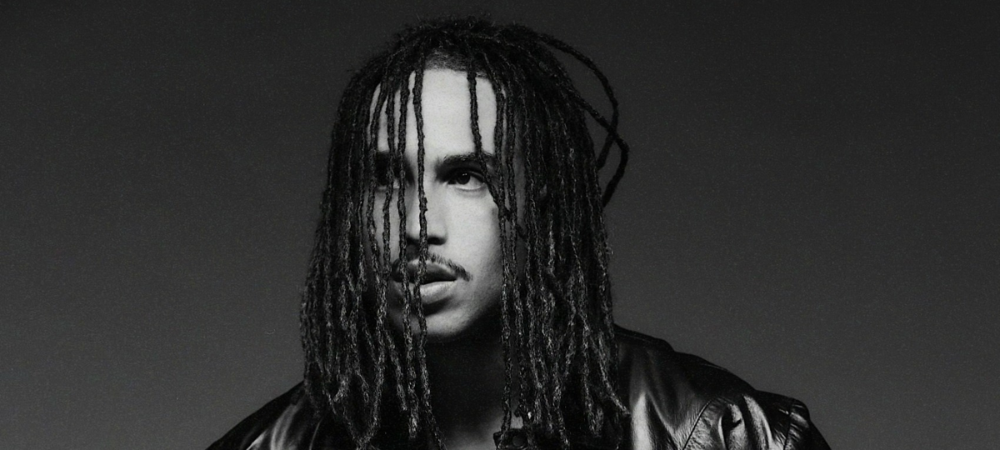
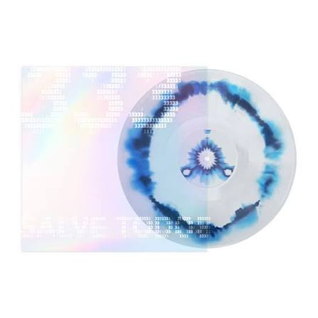

Matuê

Matheus Brasileiro Aguiar (Fortaleza, 11 de outubro de 1993), mais conhecido como Matuê, é um rapper, cantor, compositor e empreendedor brasileiro. Ele ganhou reconhecimento com o single "Anos Luz", lançado em 2017, e com o álbum Máquina do Tempo, lançado em 2020. É considerado um dos ícones do trap brasileiro. Em 2023, foi o único artista de hip-hop a ter 10 músicas ultrapassando a marca de 100 milhões de reproduções em plataformas digitais. Em setembro de 2024, lançou seu segundo álbum, intitulado 333, que registrou a maior estreia de um álbum na história do Spotify Brasil — alcançando 16,8 milhões de reproduções nas primeiras 24 horas — e também estreou em primeiro lugar na parada global do Spotify.
Biografia
Matuê nasceu em Fortaleza, capital do estado do Ceará. Aos oito anos, mudou-se com os pais para Oakland, na Califórnia, Estados Unidos. Viveu lá por três anos — período durante o qual tornou-se fluente em inglês — antes de retornar ao Brasil, em 2004, aos 11 anos de idade. Durante seu período escolar, Matuê teve seu primeiro contato com o mundo do rap e desenvolveu interesse pelo gênero; no entanto, também enfrentou momentos difíceis na adolescência após a perda de sua avó, que sempre fora uma fonte de apoio para ele. Ele começou a trabalhar como vendedor em uma loja de roupas em um shopping e, mais tarde, aproveitando seu domínio do inglês, passou a dar aulas particulares do idioma. Foi por meio desse trabalho que conseguiu economizar dinheiro suficiente para começar a investir em sua carreira musical. "Foi um privilégio enorme. Abriu muitas portas para mim e me permitiu dar o pontapé inicial na minha trajetória musical. Outro ponto é que vi a importância do rap lá nos EUA e percebi que poderia fazer o mesmo aqui", diz Matuê sobre o tempo que passou nos Estados Unidos. Em 27 de setembro de 2021, Matuê revelou que havia se tornado pai durante a pandemia, embora não tenha fornecido muitos detalhes.
Carreira musical
Matuê iniciou sua carreira em 2015, lançando sua primeira e única mixtape de reggae, chamado Reggae, produzido pela 30PRAUM. Porém, a mixtape não fez sucesso e ele decidiu migrar para área do trap. Em 2016, destacou-se na cena nacional já no seu primeiro lançamento de trap, “RBN”, com um videoclipe de estética ímpar e enorme originalidade musical, o tornando característico pelo seu estilo harmônico vocal. Matuê tem 7,1 milhões de ouvintes mensais no Spotify, seu álbum Máquina do Tempo passou de 110 milhões de visualizações no YouTube em uma semana. Seu principal hit de 2019, “Kenny G” conta com mais de 267 milhões de visualizações. No dia 10 de setembro do 2020, Matuê lançou seu primeiro álbum, Máquina do Tempo, com sete faixas num total de 19 minutos e 32 segundos de música. Matuê impressionou a todos não somente lançando a canção “Máquina do Tempo”, que era a mais esperada por todos os fãs, como também lançou ainda uma espécie de faixa bônus dentro dela, intitulada de “A+”. O lançamento do álbum Máquina do Tempo quebrou o recorde de melhor estreia no Spotify Brasil, totalizando 4,6 milhões de reproduções na plataforma nas primeiras 24 horas, e tornou-se o primeiro disco do rap nacional com cinco músicas acima de 100 milhões de execuções. No dia 9 de setembro de 2024, Matuê lançou o seu tão aguardado segundo álbum, 333, que bateu novamente novos recordes no Spotify Brasil, tornando-se o álbum mais ouvido no país nas primeiras 24 horas com mais de 16 milhões de streams, ultrapassando o recorde anteriormente mantido por Luísa Sonza com “Escândalo Íntimo”. 11 das 12 faixas entraram no Top 50 do Spotify Brasil no primeiro dia, consolidando o impacto do lançamento. Já no segundo dia Matuê ocupou o Top 10 com 9 músicas do álbum, com “Crack com Mussilon” assumindo o topo, alcançando a 1ª posição com mais de 1,45 milhão de streams em um único dia. Matuê também se destacou em uma performance promocional, suspenso no Vale do Anhangabaú, atraindo grande atenção da mídia e dos fãs. Em 2025 Matuê alcançou uma marca histórica com seu álbum de estreia, “Máquina do Tempo”, que ultrapassou 1 bilhão de reproduções no Spotify em fevereiro de 2025. Este feito torna o disco o primeiro do trap brasileiro a atingir tal número, consolidando Matuê como um dos principais nomes do gênero no país. Lançado em setembro de 2020, o álbum já havia quebrado recordes ao emplacar todas as suas sete faixas no Top 15 do Spotify Brasil na semana de estreia, com a música-título alcançando o primeiro lugar entre as mais ouvidas no país. Com essa conquista, Matuê se junta aos Racionais MC's, como os únicos artistas do segmento hip-hop/rap brasileiro a alcançarem essa marca.
Participação no “Dia Nacional do Trap” e apoio a artistas emergentes
Matuê iniciou sua carreira em 2015 com o lançamento de sua primeira e única mixtape de reggae, intitulada Reggae, produzida pela 30PRAUM. O projeto, contudo, não obteve sucesso, o que o levou a migrar para o gênero trap. Em 2016, ele marcou presença no cenário nacional com seu primeiro lançamento de trap, “RBN” — uma faixa acompanhada por um videoclipe com estética singular e grande originalidade musical, elementos que ajudaram a definir seu estilo vocal harmônico característico. Matuê conta com 7,1 milhões de ouvintes mensais no Spotify, e seu álbum áquina do Tempo ultrapassou 110 milhões de visualizações no YouTube em apenas uma semana. Seu grande sucesso de 2019, “Kenny G”, acumula mais de 267 milhões de visualizações. Em 10 de setembro de 2020, Matuê lançou seu álbum de estreia, Máquina do Tempo, composto por sete faixas com uma duração total de 19 minutos e 32 segundos. Ele surpreendeu o público não apenas ao lançar a faixa-título, “Máquina do Tempo” — a música mais aguardada pelos fãs —, mas também ao incluir nela um segmento adicional, intitulado “A+”. O lançamento de Máquina do Tempo estabeleceu o recorde de melhor estreia no Spotify Brasil, alcançando 4,6 milhões de reproduções na plataforma nas primeiras 24 horas; além disso, tornou-se o primeiro álbum de rap brasileiro a apresentar cinco faixas que ultrapassaram, cada uma, a marca de 100 milhões de reproduções. Em 9 de setembro de 2024, Matuê lançou seu aguardado segundo álbum, 333, que mais uma vez quebrou recordes no Spotify Brasil, tornando-se o álbum mais ouvido no país nas primeiras 24 horas — acumulando mais de 16 milhões de reproduções e superando o recorde anterior, que pertencia ao álbum Escândalo Íntimo, de Luísa Sonza. Onze das 12 faixas do álbum estrearam no Top 50 do Spotify Brasil logo no primeiro dia, evidenciando o impacto significativo do lançamento. Já no segundo dia, Matuê ocupava 9 das 10 primeiras posições na parada, com a faixa "Crack com Mussilon" alcançando o primeiro lugar e acumulando mais de 1,45 milhão de reproduções em um único dia. Matuê também atraiu bastante a atenção da mídia e dos fãs ao realizar uma apresentação promocional enquanto estava suspenso no ar, no Vale do Anhangabaú. Em fevereiro de 2025, o artista atingiu um marco histórico quando seu álbum de estreia, Máquina do Tempo, ultrapassou 1 bilhão de reproduções no Spotify. Essa conquista marca a primeira vez que um álbum de trap brasileiro atinge tal número, consolidando ainda mais o status de Matuê como um dos principais nomes do gênero no país. Lançado em setembro de 2020, o álbum já havia quebrado recordes ao colocar todas as suas sete faixas no Top 15 do Spotify Brasil durante sua semana de estreia, com a faixa-título alcançando o primeiro lugar em todo o país. Com esse feito, Matuê junta-se aos Racionais MC's como os únicos artistas da cena hip-hop/rap brasileira a alcançar tal marca.
Discografia
Álbuns de estúdio
- Máquina do Tempo (2020)
-

333 - XTRANHO
Extended plays (EP'S)
- Sabor Overdose no Yakisoba (2024)
| Single | Ano | Melhores posições nas paradas | Álbuns/EPs | |
|---|---|---|---|---|
| BRA | GLO | |||
| RBN | 2016 | — | — | — |
| Boomzin | 2017 | — | — | — |
| 100 Placas | ||||
| De Alta | ||||
| Celine | ||||
| Lama no Copo | ||||
| H.O.R.T.A | ||||
| Anos Luz | ||||
| De Peça em Peça | 2018 | — | — | — |
| Outro Plano | ||||
| Urubus | ||||
| Quem Manda é a 30 | ||||
| 3am | ||||
| A Morte do Autotune | ||||
| Banco | 2019 | — | — | — |
| Kenny G | ||||
| Mantém | ||||
| Quem Mandou Chamar | ||||
| Cogulândia | 2020 | — | — | Máquina do Tempo |
| Antes | ||||
| Gorilla Roxo | ||||
| Vem Chapar | ||||
| 777-666 | ||||
| É Sal | ||||
| Máquina do Tempo | ||||
| M4 | 2021 | — | — | — |
| Quer Voar | ||||
| Groupies | ||||
| Sem Dó | ||||
| Vampiro | 2022 | — | — | — |
| Flow Espacial | 2023 | — | — | — |
| Conexões de Máfia | 2 | 105 | ||
| Filho da Noite | 2024 | — | — | — |
| A Última Dança | — | — | Sabor Overdose No Yakisoba |
|
| Honey Babe | — | — | ||
| Reza do Milhão | — | — | ||
| Crack com Mussilon | — | — | 333 | |
| Imagina esse Cenário | — | — | ||
| Isso é Sério | — | — | ||
| 1993 | — | — | ||
| 4Tal | — | — | ||
| O Som | — | — | ||
| 04AM | — | — | ||
| Castelvania | — | — | ||
| V de Vilão | — | — | ||
| Maria | — | — | ||
| 333 | — | — | ||
| Like This! | — | — | ||
| REI TUÊ | 2025 | — | — | XTRANHO |
| TALKING BOUT | — | — | ||
| MEU CEMITÉRIO | — | — | ||
| ÍCONE FASHION | — | — | ||
| AUTOBAHN | — | — | ||
| FACAS E MACHADOS | — | — | ||
| ALTERADO | — | — | ||
| PENSAMENTOS PERIGOSOS | — | — | ||
| XTRANHO | — | — | ||
| BACKSTAGE | — | — | ||
| TODAS AS LUZES | — | — | ||
| OS MELHORES | — | — | ||
| Mundo Fashion | 2026 | — | — | — |
Premiações e indicações
| Ano | Prêmio | Categoria | Indicação | Resultado |
|---|---|---|---|---|
| 2019 | MTV Millennial Awards Brasil | #PRESTATENÇÃONOGÁS | Ele mesmo | Nomeado |
| 2020 | Beat BR | |||
| 2021 | Trap na Cena | |||
| 2022 | Artista Musical | |||
| Trap na Cena | ||||
| Hino do Ano | “Vampiro” (Matuê, Teto e WIU) | |||
| Feat. Nacional | ||||
| 2022 | Prêmio iBest | Influenciador Ceará | Ele mesmo | TOP3 |
| 2023 | MTV Europa Music Awards | Best Brazilian Artist | Ele mesmo | Ganhador |
| 2024 | Prêmio Multishow | Artista do ano | Ele mesmo | |
| Álbum do ano | “333” |